Home page
Already live on the site. Shown first because every page below follows it: the night-sky band, Inter Tight headlines, the planet mark and the quiet white content.
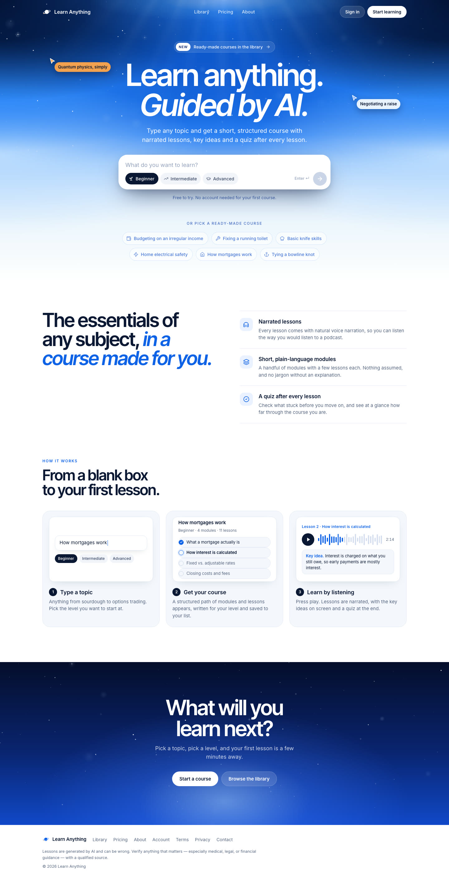
Library
Search, topic chips, a “continue learning” strip for signed-in learners, and cards that turn into dense rows on phones.
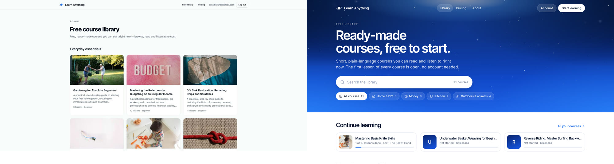
- Libraryhttps://amigostudios.github.io/learn-anything-course-pages/library.html
Course page
One layout for visitors and enrolled learners. Lessons form a numbered path with done and up-next states, a “before you start” card floats over the band, and phones get a sticky continue bar.
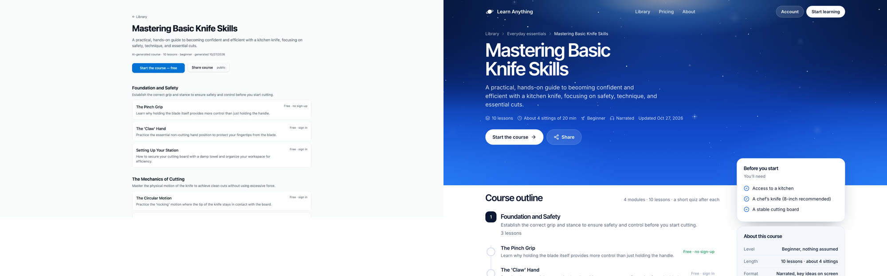
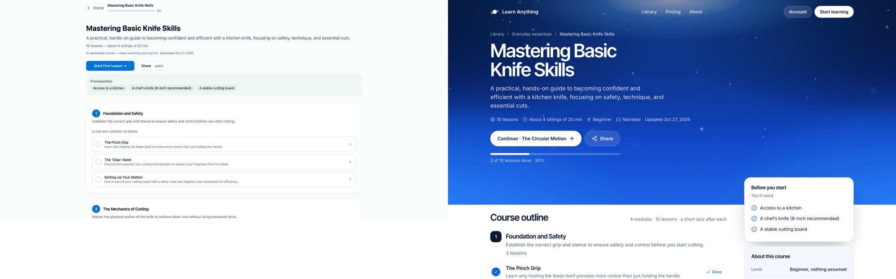
- Course page, new learnerhttps://amigostudios.github.io/learn-anything-course-pages/course.html
- Course page, in progress (3 of 10 done)https://amigostudios.github.io/learn-anything-course-pages/course.html?state=progress
Lesson
“Lesson 1 of 10”, six segment ticks, a stage for the visual, the heading, the key idea and the narration, a floating player bar that docks full width on phones, and a Lessons drawer. The lesson renders the new v2 segment JSON from the visual-system package: one of ten typed cards per segment, each with a key idea.
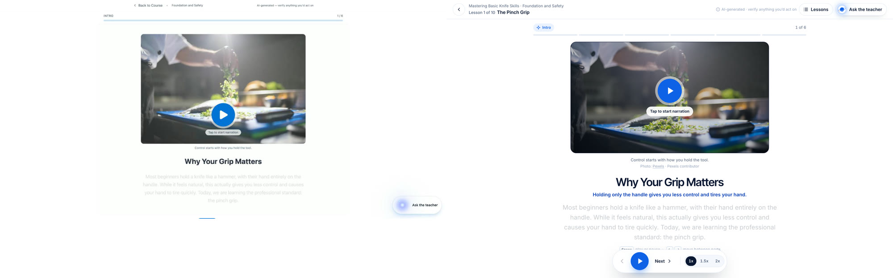
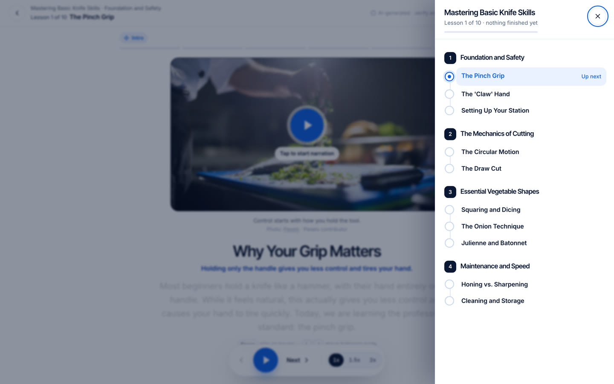
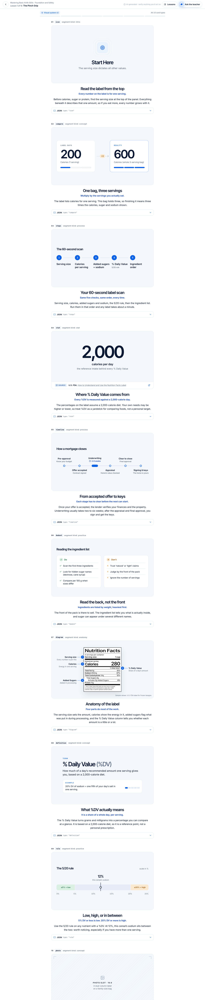
- Lesson playerhttps://amigostudios.github.io/learn-anything-course-pages/lesson.html
- Playing (narration running)https://amigostudios.github.io/learn-anything-course-pages/lesson.html?state=playing
- Lessons drawerhttps://amigostudios.github.io/learn-anything-course-pages/lesson.html?drawer=1
- All ten visual cards, with their JSONhttps://amigostudios.github.io/learn-anything-course-pages/lesson.html?state=kinds
Quiz
Same shell, a question card with lettered options, correct and incorrect states, the explanation, and the teacher one tap away.
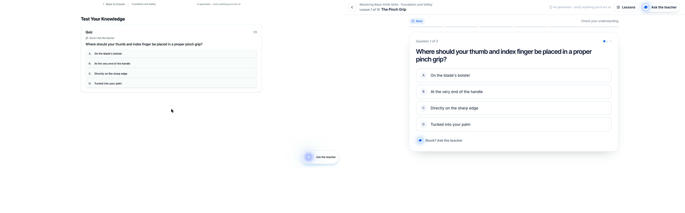
- Quizhttps://amigostudios.github.io/learn-anything-course-pages/lesson.html?state=quiz
Lesson complete
Replaces the silent 1.8-second redirect back to the course after the quiz.
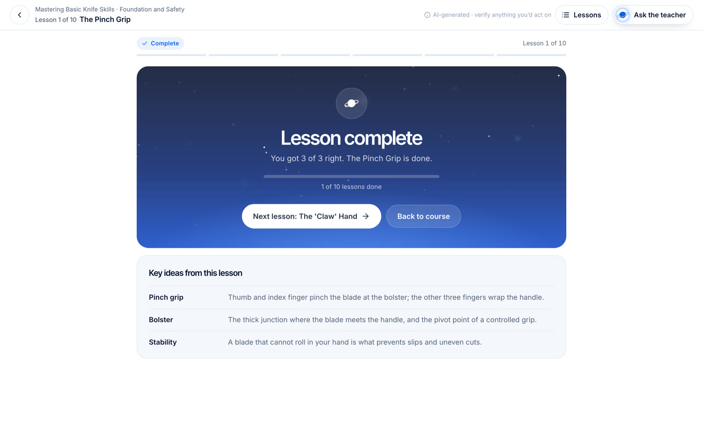
- Lesson completehttps://amigostudios.github.io/learn-anything-course-pages/lesson.html?state=done
Generating a lesson
The wait screen while a lesson is written: the planet with the learner dot on its lap, the four steps, a tip.
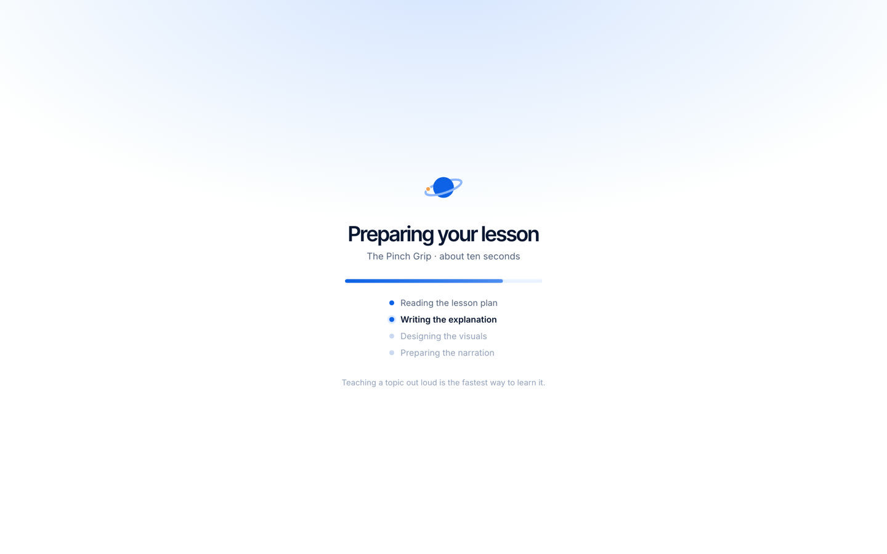
- Generating screenhttps://amigostudios.github.io/learn-anything-course-pages/loading.html
On a phone
Every link above works on a phone; this is where most of the redesign lives. Full-length captures at 390 px, scrollable inside each frame.
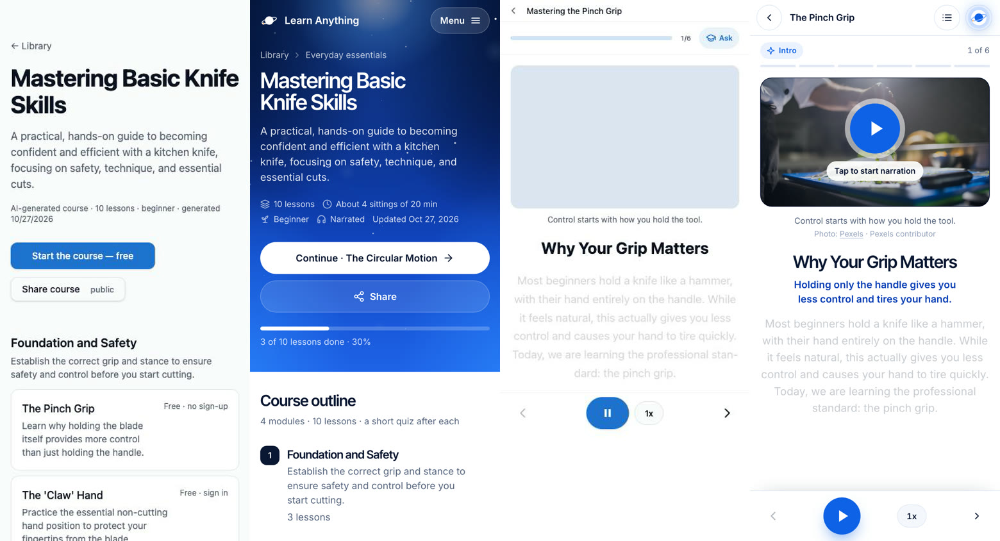
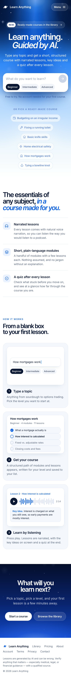
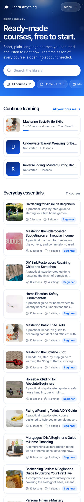
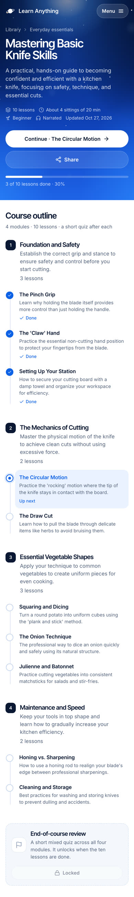
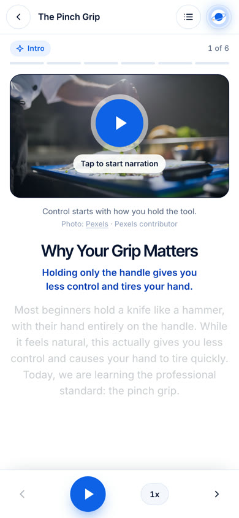
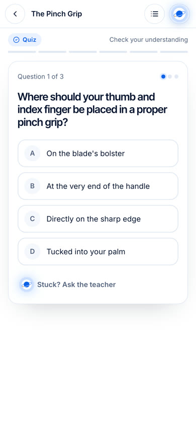
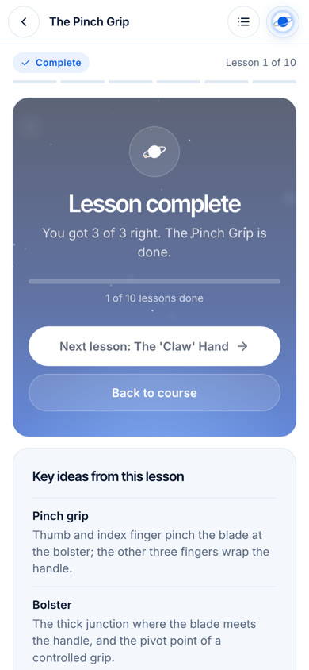
What changed, and why
- One nav everywhere. The home page nav (mark, three links, Account, Start learning) now sits on every course page in a sky tone; the lesson gets a compact white bar with the same geometry.
- The sky as a page top, not a hero. A shorter band carries the page title; the same light from above, stars, and type. Content below is white so lessons and cards stay calm.
- Library is scannable. Search, topic filters, lesson count and sittings on each card. On phones each course is one 92 px row, so six courses fit a screen instead of one and a half.
- Course page shows where you are. Modules are numbered, lessons form a path with done, up-next and locked states, and the first card tells you what to have ready. Public and enrolled share one layout.
- Lesson orientation. “Lesson 1 of 10”, a Lessons drawer to jump around without leaving, and six ticks for the six parts of the lesson. The planet mark is the teacher button.
- Visual system v2. Each segment is heading, key idea, narration and one typed card: icon, compare, steps, stat with its source, timeline, do/don’t, diagram, definition, rule or photo. Same JSON contract as the visual-system package; no emoji, no decorative stock photos, no number without a source.
- Player bar. Floats at the bottom on desktop, docks full-width on phones with safe-area padding; 58 px play, 44 px prev/next, speed as a segmented pill (a cycling pill on phones).
- Completion moment. A small sky card with score, course progress and the next lesson replaces the silent redirect back to the course.
- Honest copy only. Nothing invented: lesson counts, levels, dates, resources and narration come from the site; key ideas restate the narration.
- Motion stays light. The starfield and the light are the only ambient motion; everything else is state change. Reduced motion is respected throughout.
Lovable handoff
Download the zip or browse the source: plain React components and one scoped stylesheet, written for the existing stack (TanStack Start, React 19, Tailwind v4, shadcn, lucide-react). The README carries the paste-ready prompt. No new dependencies; recharts leaves the lesson route.
src/styles/courses.css all styles, scoped under .la-app, la- prefixed
src/components/site/ SiteHeader, SiteFooter, SkyBand, Starfield, PlanetMark
src/components/library/ LibraryPage, CourseCard, ContinueStrip
src/components/course/ CoursePage, CourseOutline, CourseSidebar, types
src/components/lesson/ LessonShell, LessonTopBar, SegmentProgress, PlayerBar,
LessonPlayer (logic kept, markup new), SegmentVisual (v2
cards + v1 fallback), Quiz, LessonComplete, LessonsDrawer,
TeacherButton (planet), GenerationLoader
src/routes/*.example.tsx how each route wires the components
reference/ the stills on this page
- Re-style, not a rebuild. Data loading, caching, progress, the audio pipeline and the ElevenLabs teacher stay as they are. Components take the data the routes already have.
- LessonPlayer keeps its logic. Audio element, word timings, keyboard shortcuts and the tap-to-play fallback are carried over line for line; only the rendered structure changes.
- Visuals: v2 first, v1 still renders. SegmentVisual dispatches on the v2
type; cached lessons that still carry v1kindvisuals render through a compact fallback until they are backfilled. - Type-checked against React 19, @tanstack/react-router and lucide-react before packaging.